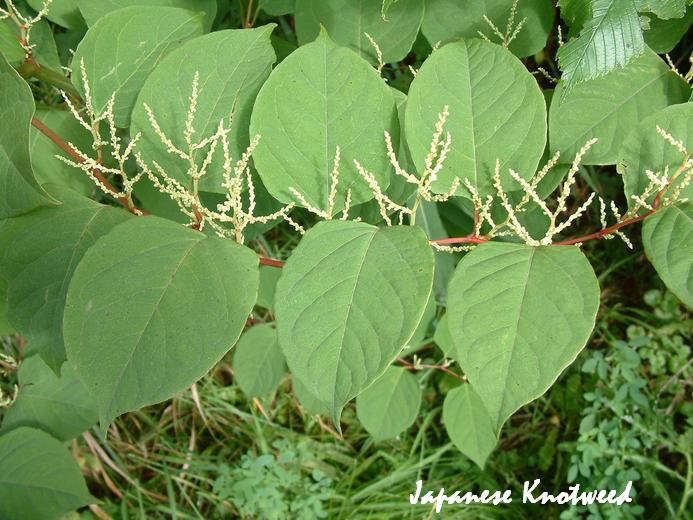

Japanese Knotwood

Description:
Japanese Knotwood has deltoid shaped leaves with long red petioles. The leaves veins are pinatte with an alternate stem arrangment. The stem is hollow, smooth and red. The flowers are small and white in finger-like clusters. The fruit are a glossy brown with wings so they can be spread by wind.
How to get rid of it?
It is essential to get rid of the whole plant. So using a shovel ensuring to exspell all of the roots is key. You can also use a systemic herbicide.
What to replace it with?
Prarie Cordgrass can replace japanese Knotwood and is great native substitute.